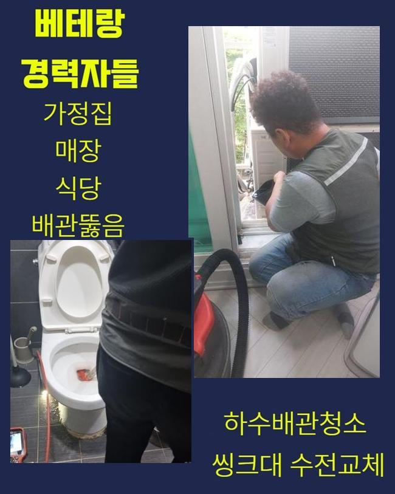
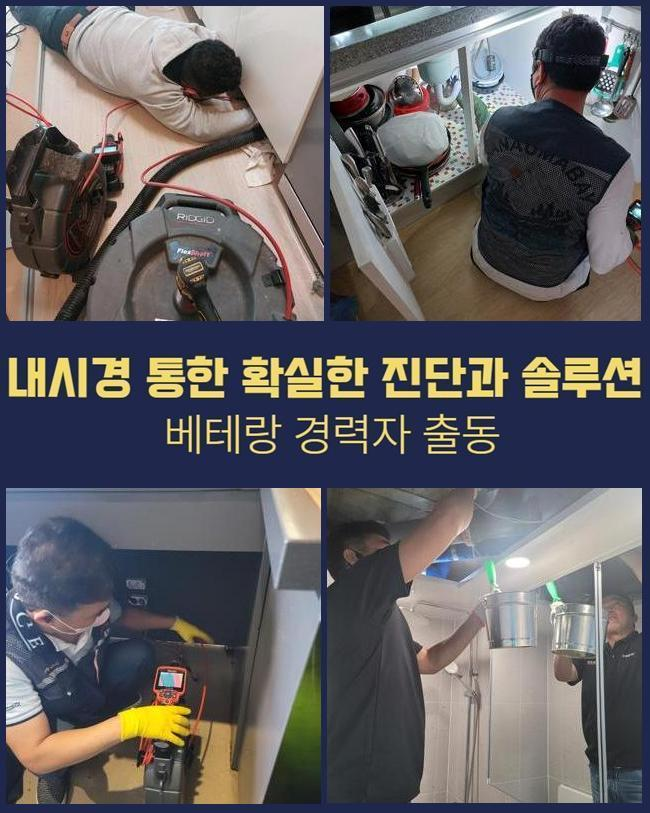
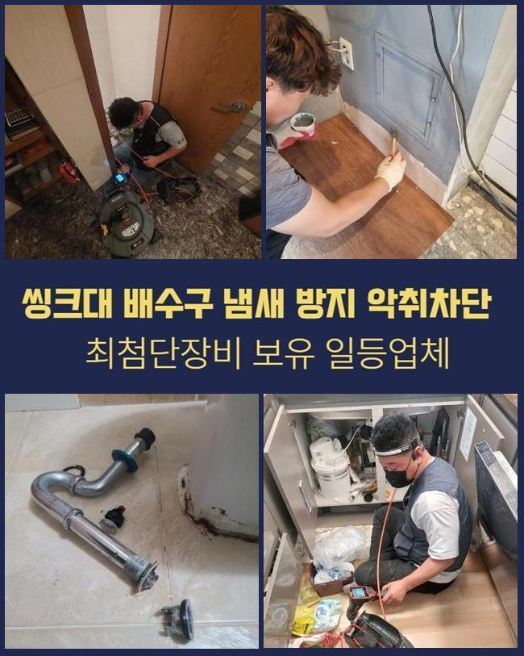
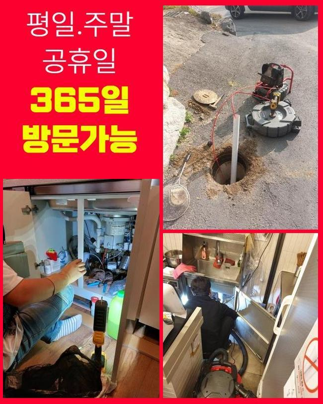
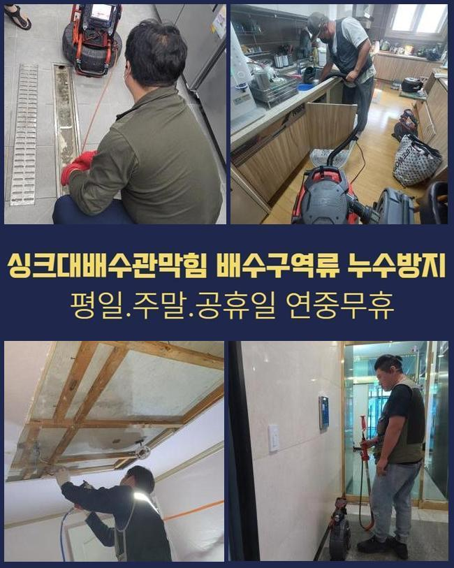
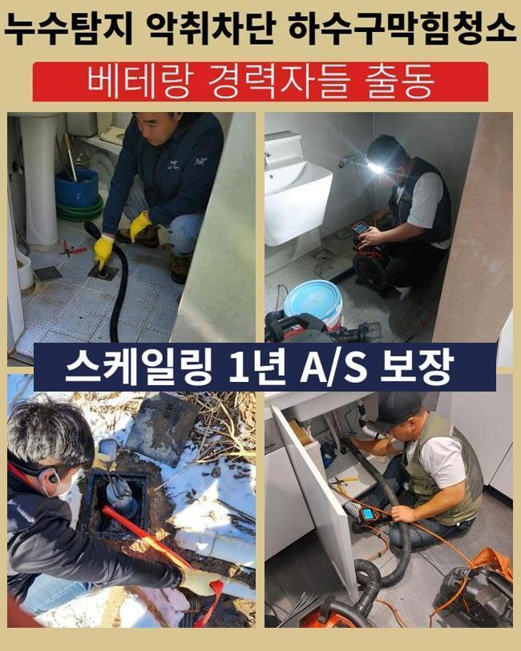
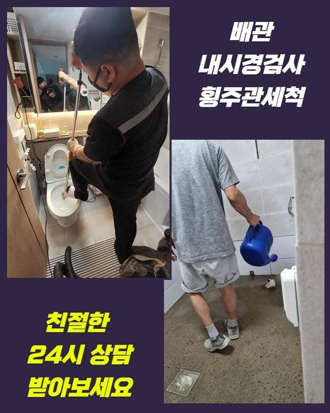

🏠 부천 범박동대변기역류 송내동 배관내시경카메라 배관뚫는업체
용인 변기막힘 전문 시공 후기

📋 작업 개요
- 위치: 용인
- 서비스 유형: 변기막힘, 하수구막힘, 배관막힘, 역류해결, 뚫는업체, 배관청소, 고압세척, 설비공사
- 작업 일시: 2025. 5. 13. 15:53
- 업체명: 하수구수사대 (010-5615-2118)
🔍 문제 상황
부천 범박동대변기역류 송내동 배관내시경카메라 배관뚫는업체
욕실 배수구 막힘문제는 평상시에 빈번하게 생기는 문제 상황입니다 욕실내부에서 물이 평소처럼 빠지지 않거나 꽉 막히는 배수장애를 나타냅니다
이런 현상은 냄새문제를 풍기는데다가 많은 문제상황을 유발하기에 정신적으로나 신체적으로 좋지않은 결과를 미칠 수 있습니다
그런데 고성능 장치를 사용한다면 배수관 고장은 빠르고 명확하게 처리하게 됩니다
이 글에서는 배수구 막힘의 이유와 해결 방안을 철저히 설명해드릴게요
하수배관 막힘의 가장 큰 이유는 평소생활에서 발생되는 갖가지 찌꺼기입니다
예컨대 씻거나 세탁중 세정용품등을 이용하면서 나오는 비눗물속엔 사용자들이 모르고 있는 기름기들이 살짝 섞여있습니다
평상시에 쓸때는 느끼기 어려울정도로 양만 보면 미량이지만 가장 흔하게 하수관로 안에 쌓이는 요소가 바로 기름기입니다
세정용품과 마찬가지로 사람몸에서 분비되고 있는 분비물과 모발들도 흔한 막힘요소로 볼 수 있습니다

🔎 원인 분석
💡 전문가 진단: 정밀 진단 장비를 사용하여 슬러지의 고착 여부를 판명하고 타격/세척 작업을 실시했습니다.
이러한 불순물들은 세면대와 변기 욕실 내부 바닥 세탁실과 반신욕조 등의 배수설비들에서도 같은 방식으로 확인되고 있으며 퇴적되면서 물 빠짐을 저해하며 끝내 하수관이 막혀버리고 말죠
하수도 막힘을 방지하기 위해서는 항상 꼼꼼한 관리작업이 필요하나 막힘상황이 나타났다면 단순 작업으로는 충분하지 않아 베테랑 기사님의 손길이 필요하답니다
저희 전문가는 배수구 속안에 누적된 오염물질을 완벽하게 청소할 수 있는 기술력과 도구를 갖췄기 때문에 막힘상황을 빠르게 처리할 수 있습니다
의뢰장소에 방문한 뒤 막힘 상태를 알아보려고 배수관에 물을 부었죠 물이 조금 하수관로로 유입되었지만 금세 역류 상황이 나타났습니다
이 현상을 보고 하수파이프가 막힌 상태라는 문제를 인지했고 한층 정밀한 점검을 위해 내시경기기를 활용하여 배관 속을 꼼꼼히 살펴봤어요
내시경장치를 사용한 진단은 막힘상태의 이유를 명확하게 진단하고 수리를 위한 의미있는 방식입니다
내시경 카메라장치로 점검한 결과 다양한 오염물이 하수관 속에 쌓여가면서 배수 상황을 저해하는 중이었어요
이것은 배수구와 배수관로에 쌓여있는 찌꺼기가 배수 작용을 막아서 역류사태가 발생하거나 배관막힘을 발생시킬 수 있음을 나타냅니다
이 상태를 처리하려면 전문 기구를 통한 적합한 대응이 필요했어요

🔧 작업 과정
찌꺼기를 처리하기 위해 저희 전문팀은 석션기구를 사용하여 반복 흡입 방식을 실시하기로 했어요
흡입장치를 사용하게 되면 수리하는 시간을 최소화하며 지출을 낮출 수 있어 재정 부담을 낮춰주기에 작업장소에서 첫번째로 실행하고 있는 작업이에요
하지만 안쪽 깊은 곳에 자리잡아 단단히 응고된 오염물질은 흡입장치의 석션기능만으로는 모조리 배출하기 쉽지않은 경우도 있습니다 이 때는 부수적인 기구나 공사가 필요해요
저희 기사님은 배수시스템 클리닝에 효과적인 플렉스 샤프트 기구를 사용하여 찌꺼기가 미세하게 파쇄될때까지 작업을 실시합니다
잘게 나뉜 불순물은 물을 이용해 배출지점으로 흘려보내고 남겨진 오염물질은 흡입장치로 남김없이 흡수하며 제거합니다
하수파이프를 철저히 세척하기 위해서는 찌꺼기가 전부 보이지 않을때까지 흡입과정을 진행했습니다
진행중에는 내시경장치를 사용하여 반복적으로 배수관 안을 체크했는데요
파이프 속을 직접 살펴볼 수 없기 때문에 내시경 기기로 반복적으로 체크하면서 부수적인 고장은 없는지 계속해서 살펴봐야합니다
찌꺼기가 모조리 처리되지 않으면 잔존하는 파이프 안의 이물질로 인해 다시금 막혀버릴 수도 있죠
저희 기사님은 재발 예방을 위하여 내시경기구를 투입해 시공 뒤에도 배관안을 구석구석 살펴보고 필요할 땐 또 다른 수단을 통해 정확한 해결을 제공합니다
저희 팀은 배수 장애를 복구하는데 멈추지 않고 고객님이 막힘상태의 이유를 확인하고 같이 해결방식을 고민할 수 있도록 협력하는 것입니다
그렇게 함으로써 같은 문제가 되풀이되지 않도록 미리 대처할 수 있으며 사용자도 하수관로와 관리와 점검에 대해 더 깊이 알게되고 맞춤 대안을 마련할 수 있어요
그러므로 시공하면서 찍은 배수관 안쪽 모습의 영상을 고객에게 전송해 막힘 문제의 크기와 지점을 친절히 안내드리며
시공을 마친뒤에도 내시경 카메라장비로 고객에게 완벽하게 청소된 하수구 안쪽 상황을 직접 확인시켜 드리고 있습니다
저희 기술자는 이렇게 복원과정을 공유하고 있으며 많은 분들이 물어보시는 항목에 대해 대화하며 전반적인 시공과정들을 솔직히 전달해 드렸습니다


✅ 작업 완료
배관 수리 마무리 순서에서는 하수파이프에 물을 쏟아 차질없이 배출되고 있는지 체크하며 모든 정비를 깔끔하게 종료했습니다
저희 팀은 지난 수리들을 참고하여 많은 케이스에서 자료를 정리하고 전문성을 키우며 다양한 배관관련 지식을 보유하고 있어요
그리고 의뢰인의 시각에서 제일 빠르면서도 최고의 대응책을 제시해 불편 사항을 해소해드리는 것이 저희 팀의 특징입니다
물빠짐이 더뎌지거나 배수구에 장애가 발생하면 서슴지말고 저희 팀에게 의뢰해 주세요




⚠️ 하수구 배관 막힘 예방 및 관리 가이드
- ✅ 머리카락, 비닐, 물티슈 등 물에 분해되지 않는 이물질은 하수구 유입을 절대 금지해 주세요.
- ✅ 하수구 거름망을 씌우고 모여진 이물질은 주기적으로 쓰레기통에 바로 비워주셔야 합니다.
- ✅ 배관 노후가 심할 경우 이물질이 더 쉽게 걸리므로 주기적인 배관 세척(고압세척 등)을 권장합니다.
- ✅ 작업 후 1년 이내 재발 시 하수구수사대에서 무상 A/S 보증 서비스를 제공합니다.
💡 핵심 정리
- 확실한 장비 작업(내시경 점검 및 샤프트 스케일링)으로 원인을 뿌리 뽑습니다.
- 작업 후 1년 이내에 동일한 부위 재발 시 100% 무상 A/S 서비스를 보장합니다.
- 서울 · 경기 · 인천 전 지역에 24시간 언제든 긴급 출동할 수 있도록 항시 대기 중입니다.
❓ 자주 묻는 질문 (FAQ)
🚨 용인 변기막힘 문제로 고민이신가요?
정확한 원인 진단과 확실한 시공으로 재발 없는 해결을 약속드립니다.
24시간 긴급 출동 | 서울 · 경기 · 인천 전지역 | 1년 내 재발 시 무상 A/S